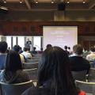

Computational research, no longer a red-headed stepchild!
Research Day as a chairperson and poster judge.I typically cringe at the thought of attending
conferences and symposia, since I am mainly a homebody (I love my desk, computer, research, and
daily schedule), but at the symposium on Tuesday I felt constantly excited and engaged. The variety
and quality of research presented was excellent and the diverse topics covered kept the gears
turning in my head.

Most importantly, the sense of camaraderie that I felt amongst these computational researchers kept
me energized. I wish that this event existed when I started graduate school. As a computational
researcher that was purportedly a biologist, it was easy to feel that I was a part of a group that I
was a red-headed stepchild. My home program was primarily concerned with experimentation or the
application of rote computational biology (i.e. anything involving a computer that would have been
published since the early 90s). Most of the other departments that included some computational
research were ones where computational methods were de rigeur and field specific research dominated.
Instead I was looking more for what made me gravitate towards the Northwestern Institute for
complexity, computational researchers that were applying new techniques and conducting
interdisciplinary research.
I can’t wait to see what new problems people will tackle as the quantity, diversity, and interdisciplinarity of computational research continues to expand. Because of my experience in biology, I realize how important it is to bring other fields and researcher into the fold of the computational community. It will help change how people view their research problems and hopefully lead to better research. This is what drives me to help put on the bootcamps as an introduction to programming and data science. It’s also why I believe that events like the Computational Research Day are integral to a healthy, productive research environment at a University.
Keep Growing, Computational Research! Keep Growing!
I can’t wait to see what new problems people will tackle as the quantity, diversity, and interdisciplinarity of computational research continues to expand. Because of my experience in biology, I realize how important it is to bring other fields and researcher into the fold of the computational community. It will help change how people view their research problems and hopefully lead to better research. This is what drives me to help put on the bootcamps as an introduction to programming and data science. It’s also why I believe that events like the Computational Research Day are integral to a healthy, productive research environment at a University.
Keep Growing, Computational Research! Keep Growing!